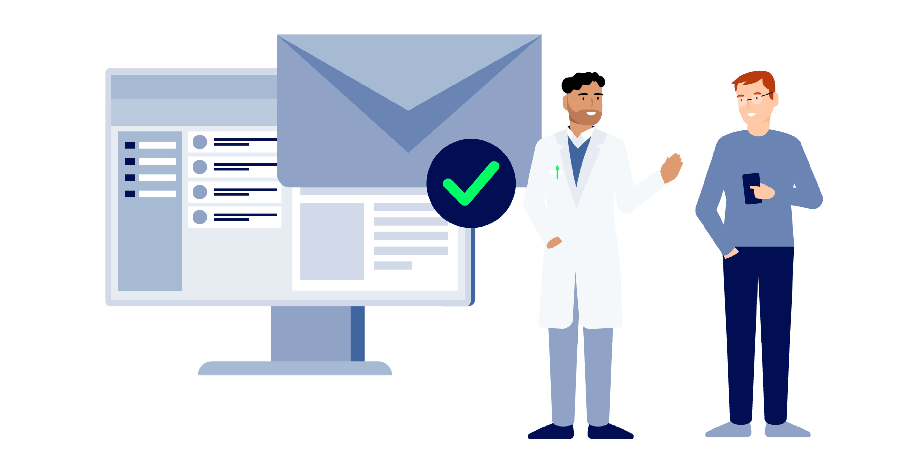

Kommunikation im Medizinwesen (KIM)
👥 Willkommen beim Fachteam KIM (Kommunikation im Medizinwesen)
KIM ist der sichere E‑Mail‑Fachdienst der TI. Er ermöglicht den standardisierten, Ende‑zu‑Ende geschützten Austausch zwischen Praxen, Kliniken und weiteren Leistungserbringern – direkt aus dem PVS und mit geprüften Identitäten.

In der Sub‑Welt erklären wir dir zuerst die KIM‑Bausteine, danach löst du produktspezifische Aufgaben zu Validierung, Entschlüsselung, Dienstkennungen und interoperablem Datenaustausch. Teleporter bereit? Los geht’s.
- Über den Teleporter gelangst du in die Aufgabenwelt rund um KIM‑Nachrichten, Identitäten und TI‑Services.
- Dort erwartet dich als TI‑Ranger eine interaktive Story mit praxisnahen Aufgaben.
🧩 Story Line
Die Praxis Dr. Müller (Orthopädie) kommuniziert bislang klassisch per E‑Mail – doch Unsicherheiten bleiben: Wie sicher ist das wirklich, und sind sensible Gesundheitsdaten ausreichend geschützt? Gemeinsam mit den TI‑Rangern stellt die Praxis auf den KIM‑Fachdienst um. Der Effekt: nachweislich sichere Kommunikation mit geprüften Identitäten, ein nahtloser Austausch von eArztbrief, eAU, eRezept‑Zuweisungen und mehr – direkt aus dem PVS, nachvollziehbar und standardkonform.
Du begleitest die Umstellung im Alltag: Adressen prüfen, Nachrichten korrekt adressieren, Identitäten verifizieren und den Versand inklusive Anhängen sauber abwickeln. Schritt für Schritt lernst du, worauf es in typischen Praxissituationen ankommt – ohne Spoiler, aber mit klaren Leitplanken.

Lerne, wie du mit KIM sicher und praxisnah arbeitest: von Beispiel‑KIM‑Adressen aus der Spezifikation über das Entschlüsseln unvollständig konfigurierter Nachrichten bis zum korrekten Ausfüllen von Dienstkennungen für eRezept‑Zuweisungen. Außerdem: Laborbefunde finden (inkl. Bilirubin), versteckte Anhänge erkennen und per QR‑Code eine eEB für die Praxis bereitstellen – schnell, standardkonform und alltagstauglich.